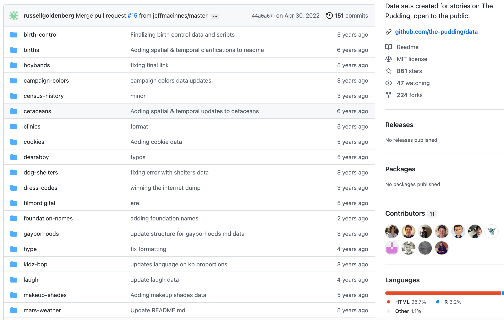
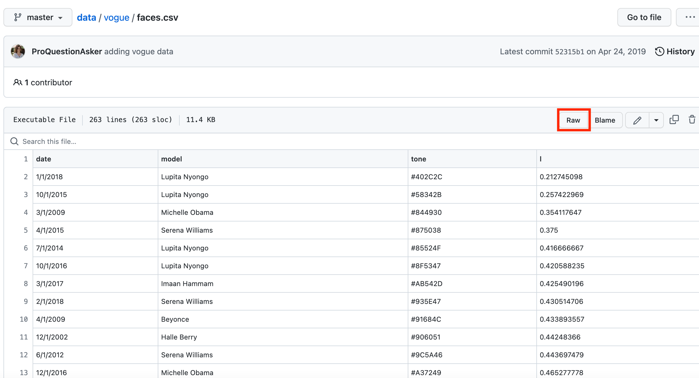
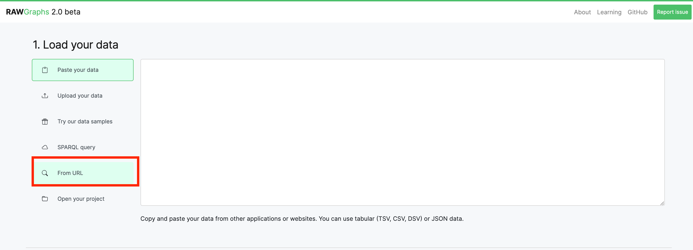

Mini-Assignment 1: Create a Data Visualisation
Making a chart with rawgraphs.io
For this assignment, you will create a data visualisation using a dataset of your choice, and the web application Rawgraphs.io. You should pay attention to the design principles and approaches to graphical displays we have discussed this week in class and in the reading.
Detailed tutorials are available on the rawgraphs website: https://www.rawgraphs.io/learning, but these steps should get you started:
Open the application
Rawgraphs.io runs on any modern web browser, so getting started is simple. Open https://www.rawgraphs.io/ on your computer (a computer is much better than a tablet, if possible).
Click the big ‘use it now’ button.
Load some data:
The starting-point for any data visualisation is some data. Learning to work with data is an essential part of digital design, so it’s worth familiarising yourself with how this works. If you get stuck, there are some data samples (click on ‘Try our data samples’), but you’ll miss a pretty important step.
Rawgraphs works with data in tabular format - that is, data where the columns separated by commas or tabs, and each row is a new line. This is a very common format used in spreadsheet software and online.
You can use any dataset you like. If you have one, the easiest option is to open it in a spreadsheet application (Excel, or Google sheets), and copy and paste the entire thing to the data input box in Rawgraphs.
If you don’t have a dataset, here are instructions for two methods to find and copy data to rawgraphs. First, pasting a dataset directly from Github and second, using Google sheets to load a table from Wikipedia.
1. Loading a dataset from Github
The website Github contains many datasets from various projects, which have been made available for use by others. We’ll select a dataset originally made for the data journalism website Pudding.cool.
First, go to the public data ‘repository’ for the site: https://github.com/the-pudding/data/. Here, you’ll see a bunch of individual folders. Each one contains a dataset (or multiple datasets), corresponding to articles from the site:

Open the relevant folder
As an example, we’ll use a dataset of models and skintones which was originally part of the 2019 story ‘Colorism in High Fashion’.
Open the ‘Vogue’ folder. The first thing you should do is read the description underneath to understand what the dataset is about.
The data description tells us there are two datasets here: faces.csv and models.csv. The faces.csv dataset lists every model from the front cover of Vogue over a certain time period, along with a ‘lightness’ value of between 0 and 1. We’ll import this dataset to Rawgraphs and graph these lightness values over time.
Get the link for the .csv file.
To import to Rawgraphs, we need a url (web address) pointing directly to the dataset. To get this, first click on the faces.csv file, which will open in a tabular format. Next, click the ‘raw’ button at the top-right of the dataset:

Copy the url
This will open the file itself in your browser. Copy and paste the url (in this case, it’s https://raw.githubusercontent.com/the-pudding/data/master/vogue/faces.csv).
Import to Rawgraphs
Open rawgraphs in another tab, if you haven’t already. In the load your data screen, click on ‘from URL’:

Paste the web address into the box which appears here, and click ‘load data’. The data will appear, in tabular form.
Ensure the data are of the correct ‘type’.
As we’ll learn over the next few weeks, computers have to be told what ‘type’ of data they have been given. In many software, they will make guesses, but these are not always correct. For example, in order for Rawgraphs to correctly render this data along a timeline, we need to specify that the ‘date’ column is in fact, a date. You’ll notice that the first column contains a date, in the format DD/MM/YYYY. However, rawgraphs is currently interpreting this as regular text characters (also known as a ‘string’).
To fix this, click on the ‘Aa’ icon to the left of the word date in the first column. Next, click on the ‘date’ item in the dropdown menu which appears. Finally, click on the correct date format (DD/MM/YYYY).
At this point, you can move onto the next step, and create your visualisation. Or, keep reading for another method to get data.
2. Load data from Wikipedia tables using Google Sheets.
This method involves a tiny bit of ‘coding’, but it is a neat trick and maybe be useful when you come to thinking about getting hold of data of interest to you.
As you’ll probably know, Wikipedia contains many thousands of datasets within its pages - in the form of online tables. The highest-grossing movies of all time, for example, or the longest rivers in the world.
These make great datasets for many types of visualisations, but there are a few steps needed to import this to Rawgraphs. You’ll need to open a Google sheets spreadsheet, enter a special formula in the first cell, and then copy and paste the data directly to Rawgraphs.
Open Google sheets
Google sheets is a free online spreadsheet program. If you don’t have a google account, you’ll need to set one up beforehand. Go to the application, for example through https://www.google.com/sheets/about or just through your own google profile, and create a blank sheet.
Next, copy and paste the following code into the first cell (A1) of your spreadsheet:
=IMPORTHTML("https://en.wikipedia.org/wiki/List_of_highest-grossing_films","table", 1)
This has a few elements - you should understand what each of them does:
IMPORTHTML(: this is the special Google sheets formula which allows you to import a table from a web page. Everything else goes within parentheses after the formula name.
Next are three elements, each separated by a comma (note that the first two are within quotation marks, the third is not):
"https://en.wikipedia.org/wiki/List_of_highest-grossing_films"is the url to the wikipedia page where the table is contained (you can swap this for any other one you’re interested in)"table"tells the formula to find a table1tells the formula to take the first table on the page. You may have to use a different number if there are multiple tables, and you want a different one.
Once you’ve copied in this to the first cell, press return. After a few seconds, the formatted table should appear.
Fix the numbers formatting
The data we want to visualise is the ‘worldwide gross’ column. The number in this column is in a format not suitable for reading by a computer. First of all, most values have a dollar sign before the value, second, the values are separated by commas, and third, some have errors. Rawgraphs will expect numbers in the same currency and without the dollar sign.
Before we fix these, we need to make a small change to the data. At the moment, the data is reliant on being pulled live from the web page. We want to replace it with a regular copy.
Click and drag to select all the data. Click edit->cut, and then edit->paste special->values only.
Next, fix the errors which happened during the import. In lines 20, 22, and 50, delete the characters and numbers to the right of the dollar sign.
To get rid of the dollar signs, use Google Sheets ‘find and replace’ tool. First, select the entire ‘worldwide gross column. Next, click on Edit->find and replace. Type a dollar sign in the first box, leave the second box empty, and then click ’replace all’.
Last, tell Google sheets that this is a number. Select the ‘worldwide gross’ column, and click format->number->automatic.
Copy and paste the data to Rawgraphs
Highlight the data, use edit-> copy. Make sure you have the ‘Paste your data’ option selected in rawgraphs, and simply paste it in using right click.
Draw your chart
Once your data is loaded using one of these methods, scroll down on the Rawgraphs site to see the chart options available to you. For this week, it’s best to stick with something simple, for instance a bar chart, bubble plot, or line graph. See the Financial Times’ Visual Vocabulary for more information which chart is suitable for your particular data. We’ll use another wikipedia table, taken from https://en.wikipedia.org/wiki/List_of_sovereign_states_by_wealth_inequality, to visualise the wealth and Gini coefficient of nation states.
Some other interesting examples I’ve come across are this dataset of Hollywood age gaps:
https://raw.githubusercontent.com/rfordatascience/tidytuesday/master/data/2023/2023-02-14/age_gaps.csv
And this of the ‘Bechdel test’: https://raw.githubusercontent.com/rfordatascience/tidytuesday/master/data/2021/2021-03-09/movies.csv
Once you have selected the ‘bubble chart’ option, scroll down to the ‘mapping’ section. Here, you can drag columns from your data to be mapped to particular geometries. Drag ‘GDP per capita’ to the ‘X-axis’ and ‘Nominal GDP’ to the y-axis.
From here, experiment with the options available. You can set more columns to visual elements, for example drag ‘population’ to the ‘size’ option. Add labels for the countries by dragging ‘Country’ to ‘label’. Play around with the colours, labels, and margins, until you’re happy with your plot.
If you have time, consider choosing a colour palette using an online resource such as the Data Color Picker.
Describe your chart
You should spend some time thinking about what your chart is trying to say, and use visual elements as far as possible to say it. Try not to simply produce a complex chart with many different elements, but think about how it might be read and how it helps us to process the data and the narrative around it.
When you’re happy with your visualisation, export it as a .png using the last section on the site. After this, you’ll need to write a detailed caption for your chart. This should explain to the viewer what they are looking at, and how they should read it. It should also explain the steps you took to get hold of the data, how/if you pre-processed it, and any warnings about the data or the visualisation the reader should know about. This should be about 300 words at most.
As an example of how you might describe the chart above:
This chart plots the division of wealth inequality across most nation states on earth. The data has been scraped from the Wikipedia page: https://en.wikipedia.org/wiki/List_of_sovereign_states_by_wealth_inequality, using Google sheets. The data was preprocessed to remove missing values and to fix small errors. The wikipedia page states that the data is correct for 2018, and the Gini index for 2019. A small caveat is that Ireland does not generally use GDP as a measure of wealth, because of its use by many multi-national companies.
The chart plots the overall wealth of the country on the y-axis (GDP), against the GDP per capita on the x-axis. I chose to use a bubble plot because I wanted to emphasise the relationship (correlation) between the two variables. If we imagine a diagonal line running from the bottom-left to the top-right of the chart, countries above/to the left of that line have large economies but are poorer, and countries below/to the right have smaller economies but are richer per person. In addition, the Gini index (a measure of the distribution of wealth in a country) is visualised using a diverging colour scale: less equal countries are towards the red end of the colour spectrum; more equal countries are blue, and those in the middle are grey.
This chart has some issues with readability. Because most countries have a small GDP and GDP per capita, it is difficult to read the values in the bottom-left of the chart. If I want to develop this for my visual portfolio, I will think about different ways of making it more readable, perhaps by having separate charts for the smaller countries, and putting them together afterwards.
Upload to Brightspace
Create a document in MS word. Import your chart, and write your description below it. Export this as a .pdf, and upload to the correct area on Brightspace.